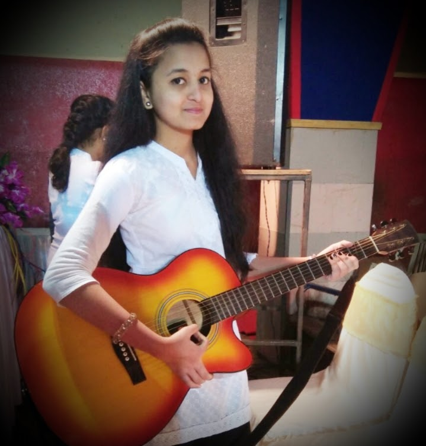
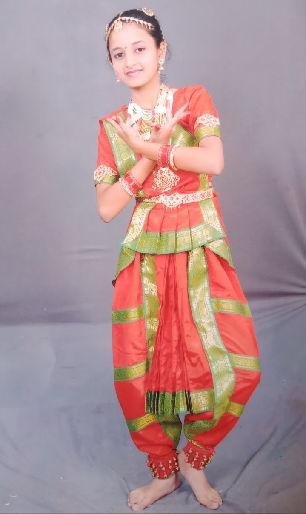

HOBBIES
Hobby is a good thing a person gets from childhood.We all do some kind of
work according to our intrest which can gives us haoppiness and joy that is called hobby.I also have some hobbies.
♦I just love singing.Singing is just like my life.I always used to listen new songs and try
to sing it in my original voice.I also sung a classical song on "SATARA AKASHWANI".Everybody says that my voice is good.So I always
used to entertain them by my good voice.

♦I have very keen intrest in dancing.It refreshes my mind.I also love dancing.I have taken part
in dance competition every year in my school.I also participated in "WAI FESTIVAL."

♦I also like to place my topic in front of public,as I participated in elocution competition
every year.And I also got many prizes.
♦Drawing is also one my favourite hobbies.It strenghthens my focus & increase my attention.